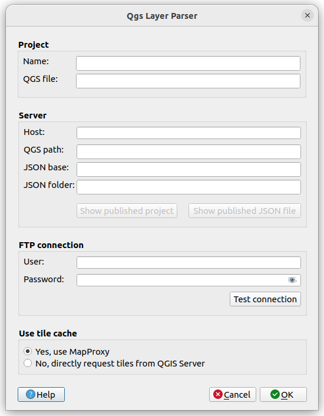
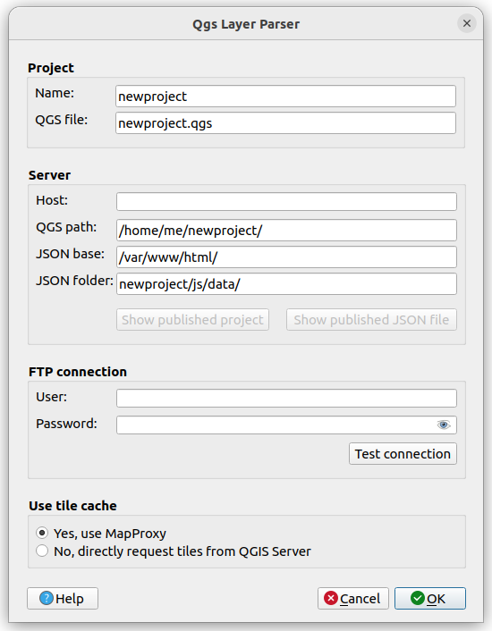
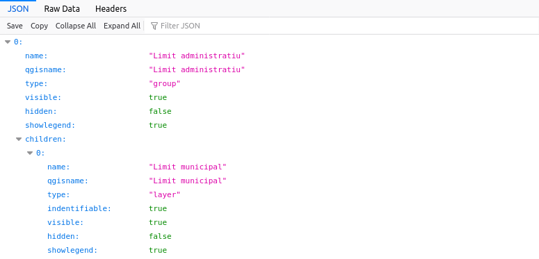

QGIS plugin which writes a JSON config file with layer information for the open QGIS 3 project.
LayerTree2JSON makes it easy to syncronize your QGIS 3 proyect with a web map viewer. It parses the Qgis project and writes a JSON config file with layer information. Additionally it can handle the upload using SFTP.
Notes:
You can find the code and open issues at https://github.com/geraldo/layertree2json
Initially you have to add a new project clicking New button:
You have to fill out at least the field Project Name. On clicking OK some fields are filled out using default values. Opening up the configuration window again clicking Edit, you should edit the fields QGS file, QGS path, JSON path and JSON folder to your server settings:
There are 2 important directories to use a web map with QGIS Server:
/home/me/newproject/newproject.qgs
/var/www/html/newproject/js/data/newproject.qgs.json
Note: For now the name of the QGS file has to be exactly the same as the local .qgs file you use for this project.
To test the server configuration, you have to fill out the field Server Host, which enables the buttons Show published project and Show published JSON file:
https://mymapserver.com/newproject/. In this folder you should publish your web map.
https://mymapserver.com/newproject/js/data/newproject.qgs.json
To use the full power of the plugin and upload your settings to the server you also have to fill out FTP User and FTP Password. Then you should test the settings clicking the button Test connection which shows you the success using QGIS notifications.
The plugin does parse your active QGIS project and creates a JSON file with all your groups and layers. It reproduces the actual state of QGIS Layers Panel, so you should do the following preparations in order to get a nice result in your web map:
@to hide layers: This sets
"hidden": truein JSON and could be used to tell the layer switcher to avoid showing a layer or group but render them by default.
~to hide the legend: This sets
"showLegend": falsein JSON could be used to avoid rendering the legend in layer switcher.
¬to load WMS layers directly: This sets
"external": truein JSON. This option also looks up the layer source and writes the following parameters:
"wmsUrl": ''
"wmsLayers": ''
"wmsProjection": ''
¡to totally ignore layers for export.
Clicking OK starts the parser and saves the JSON file in the same folder of your .qgs file. By default is then opened in your default web browser:
If you would like to upload the produced JSON and the QGIS project file to a web server, you have to fill the related fields in project configuration and change to Mode Upload to server.
You have to install python library pysftp as explained in section Installation.
Static layer files (like .shp, .gpkg, etc.) can be huge and uploading these files per FTP to the server can take a while. As the upload happens in the same thread, QGIS can get blocked for a while. This message will disappear automatically once the upload is finished.